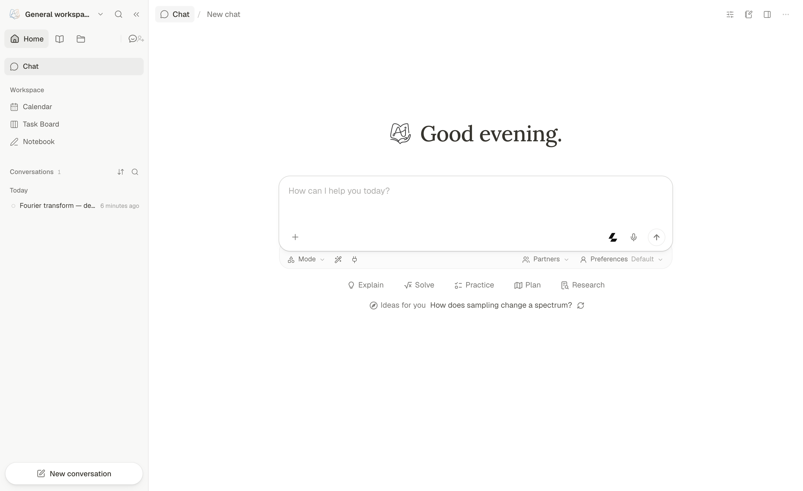
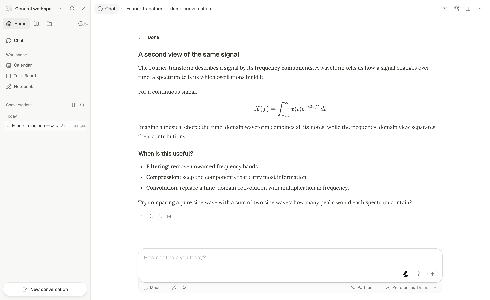
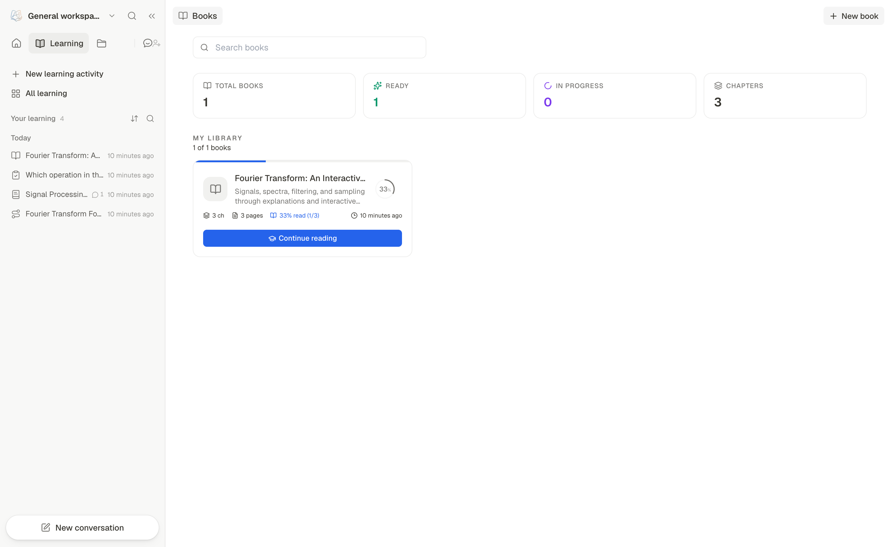
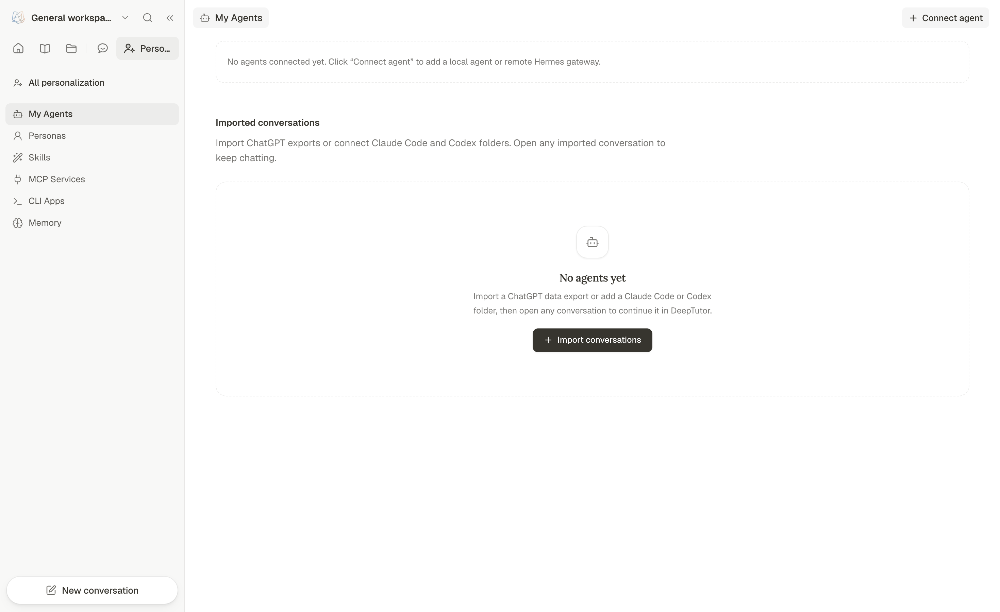

终身个性化辅导 · Agent 原生学习工作台
由香港大学数据科学实验室（HKUDS）开源的 AI 辅导系统：一个运行时贯通对话、测验、研究、可视化、解题、掌握路径与沉浸式精读等多种学习模式，并连接辅导、科研、创作与练习的可扩展系统。
一个 Agent 原生运行时，覆盖学习的完整闭环
Chat、Quiz、Research、Visualize、Solve、Mastery Path、Reading 等模式共享会话上下文，同时保留各自专为场景设计的工作流。
Home、Learning、Resources 将对话、书籍、精读、练习、任务板、日历与学习笔记本连接起来，共享资料、进度与学习上下文。
基于 LlamaIndex、PageIndex、GraphRAG 或 LightRAG 构建版本化知识库，在文档、视频、音频旁学习，并附带来源可溯的引用。
咨询 Claude Code、Codex、Grok CLI 等在线智能体，导入历史会话，或运行拥有独立记忆、资源与 IM 频道的持久化 Partner。
L1 轨迹、L2 事实与 L3 综合让个性化过程可见、可编辑，每条结论都附带可在 Memory Graph 中审计的证据链接。
通过统一的 Agent 原生运行时添加人设、内置或社区技能、MCP 服务、CLI 应用与生成模型，按需扩展能力边界。
为每个学科或项目建立一个 Workspace，界面随工作区切换
Chat、任务板、日历与学习笔记本
书籍、掌握路径、沉浸式精读与练习
会话历史、收藏、学习日志、题库与知识中心
持久化伙伴、伙伴分组、资源访问与 IM 频道
我的智能体、人设、技能、MCP 服务、CLI 应用、记忆与设置
来自 DeepTutor 官方仓库的真实界面截图




选择适合你的安装方式，完整功能需在本地或服务器上运行
内置 Python 与 Node.js，无需终端环境，下载即用。
无需安装 Python / Node.js，启动后访问 http://127.0.0.1:3782
docker run --rm --name deeptutor \ -p 127.0.0.1:3782:3782 \ -v deeptutor-data:/app/data \ ghcr.io/hkuds/deeptutor:latest
需要 Python 3.11–3.14 与 Node.js 20.9+，启动后在 Settings 中配置模型。
mkdir -p my-deeptutor && cd my-deeptutor python -m pip install -U "deeptutor[full]" deeptutor init # 配置端口、LLM 提供商、可选嵌入/搜索 deeptutor start # 启动后端 + 前端
最小化安装核心包，无需 Node.js 与 Web 前端。
mkdir -p my-deeptutor && cd my-deeptutor python -m pip install -U deeptutor deeptutor init --cli deeptutor chat
源码安装与更多高级配置，见官方 README 与 docs.deeptutor.info。论文：arXiv:2604.26962